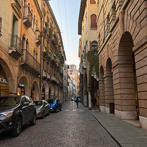

街紹介
Treviso

イタリア北東部、ヴェネト州に位置し、ティラミス発祥の地として知られ、
甘美な伝統が息づくこの街は、歴史と美しい風景が調和する隠れた名所です。
中世の趣を残す古い城壁に囲まれ、街の中心には穏やかに流れる運河が張り巡らされています。
石畳の道を歩きながら、歴史ある建築や美しい橋を眺め、散策を楽しむことができます。
新鮮な食材を使った郷土料理や、地元産のプロセッコも味わえる美食の街でもあります。
